2.6×
End-to-End Throughput
over full-KV vLLM
Drop-in
Substrate for existing
non-uniform methods
Near-Baseline
Accuracy across
5 dense & MoE models
Non-uniform KV compression is algorithmically the right tool for multi-turn serving, but its theoretical memory savings evaporate inside today's serving stacks. Tangram closes this gap: built on vLLM, it lets existing methods — Ada-SnapKV, Expected Attention, and FastKVzip — deliver their full algorithmic gains as real served throughput. Evaluated on five dense and Mixture-of-Experts models (Qwen3-4B, Llama-3.1-8B, Gemma-3-12B, GPT-OSS-20B, Qwen3-30B-A3B) on SCBench, it matches each method's original accuracy while improving throughput by up to 2.6× over the full-KV baseline.
Multi-turn LLM serving accumulates dialogue history whose Key-Value (KV) cache grows with every turn and every user, quickly exceeding the model weights themselves and making memory—not compute—the binding constraint on throughput. Non-uniform KV compression, which allocates heterogeneous budgets across attention heads, preserves accuracy far better than uniform schemes, yet remains impractical: modern serving stacks force every head to the same KV length, so compressing a specific head is structurally impossible—the memory it would free collapses back into page fragmentation. Realizing heterogeneity instead spends up to 25% of prefill time reclaiming scattered pages, and skews GPU workloads that inflate decode latency by up to 1.7× or burn 15–20% of each decode step on re-planning.
We observe that this heterogeneity need not be discovered at runtime: head-wise retention follows a two-level structural regularity—an input-invariant head ranking with narrowly bounded per-head ratios—that can be calibrated offline from as few as 50 samples. Building on this insight, we present Tangram, a serving framework that statically resolves what prior systems handle dynamically: (1) Budget Reservation fixes each head's post-compression footprint at scheduling time, eliminating page reclamation; (2) Ragged Paging clusters similar-budget heads into independent page tables, turning fragmentation into reclaimable memory; and (3) Ahead-of-Time (AOT) Load Balancing precomputes balanced GPU partitions with zero runtime planning. Implemented on vLLM, Tangram serves as a drop-in substrate for existing non-uniform compression methods, matching their accuracy while improving end-to-end throughput by up to 2.6× over the full-KV baseline.
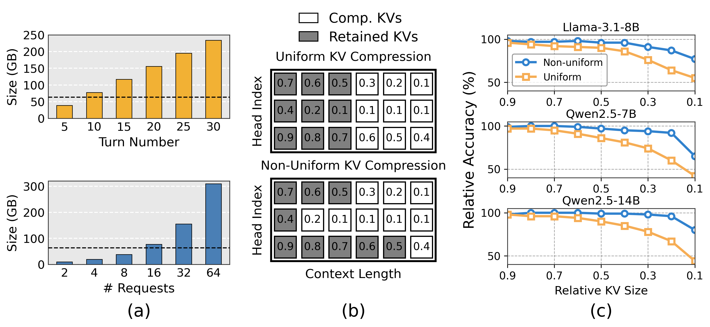
In multi-turn serving, each turn appends to the dialogue history (Ht), so the KV cache scales linearly with the number of turns and concurrent users (a). For Qwen2.5-32B, just 16 concurrent sessions surpass the model weights themselves within ten turns and keep growing—making memory, not compute, the binding constraint on batch size and throughput. Compression is therefore essential, but how the budget is distributed across heads decides whether accuracy survives (b): uniform schemes starve the few retrieval heads that carry long-range information, degrading accuracy, whereas non-uniform compression preserves it (c).
Why non-uniform? Per-head KV retention is highly heterogeneous within a layer—a small subset of retrieval heads carries long-range context while most attend only locally. A budget that mirrors this skew preserves accuracy under aggressive compression, exactly where uniform truncation collapses. The question for a real serving system is whether this heterogeneity is predictable enough to plan around—it is, and that observation is what Tangram is built on.

The serving stack—PagedAttention, continuous batching with chunked prefill, and optimized attention kernels (FlashDecoding/FlashInfer)—is architected end-to-end around a single implicit assumption: all attention heads hold KV caches of identical length. Non-uniform compression violates this assumption at every layer of the stack, exposing three fundamental limitations—and each one motivates a corresponding Tangram technique:
A request's block table records a single KV length, so every head must be managed at the same length—there is simply no way to hand an individual head a shorter cache. Compressing a specific head is therefore structurally impossible: even after a head's entries are evicted, its slots stay pinned to the longest-retaining head, and the memory compression should have freed collapses into page fragmentation.
Each head's post-compression footprint is unknown until the forward pass computes importance scores at runtime. The scheduler must therefore over-allocate, then run a costly compress-and-reclaim pass—identifying scattered freed pages, returning them to the pool, and remapping page tables in flight. This control-plane churn consumes up to 25% of prefill execution time.
FlashDecoding's static, uniform KV splits become stragglers under heterogeneous lengths, inflating decode attention latency by up to 1.7×. FlashInfer's dynamic rebalancing restores utilization but loses plan reuse: a unique partition must be recomputed for every layer at every step, burning 15–20% of each decode iteration on the CPU.
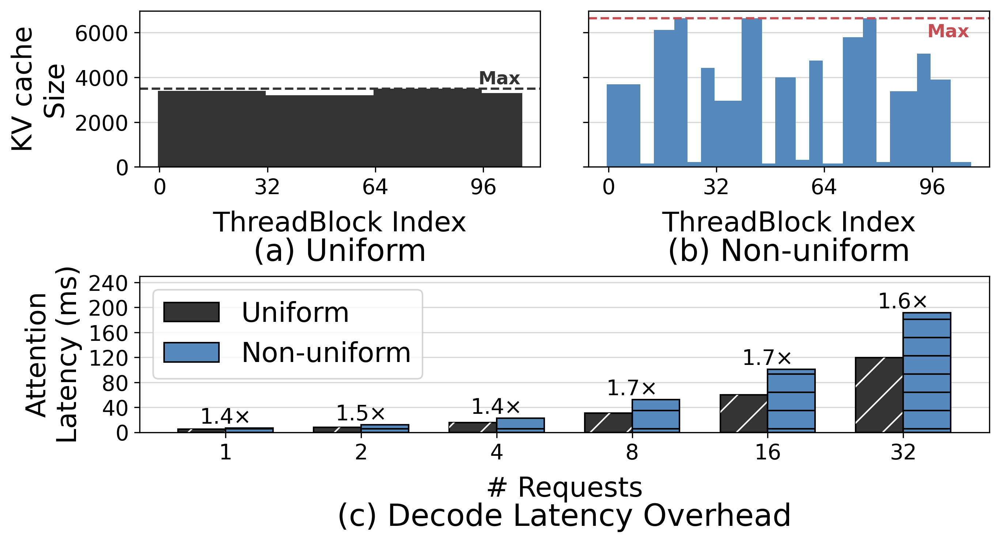
Because head-wise retention is a stable, model-intrinsic structure, Tangram calibrates it once, offline and turns every runtime burden of non-uniformity into a deterministic, pre-scheduled decision. Each limitation above maps to exactly one technique:
Fixes each head's budget to its offline-calibrated value, so the scheduler reserves exactly the post-compression pages at scheduling time—eliminating over-allocation and the entire compress-and-reclaim path.
Breaks the single-length constraint: per-group page tables let similar-budget heads be managed—and compressed—at their own length, so the capacity compression frees becomes physically reclaimable. A Vectorized Block Table (OpenMP + SIMD) keeps the added control-plane cost negligible.
Precomputes a workload partition map from the reserved budget profiles, delivering balanced SM utilization with zero runtime planning overhead.

Tangram eliminates the dynamic compress-and-reclaim bottleneck by replacing runtime-decided compression with a static, offline-calibrated budget for every head, letting the scheduler reserve exactly the required pages before execution.
Head-wise retention is intrinsic to the model, not driven by the input: the ranking of heads by retention demand is essentially input-invariant, and each head's absolute ratio varies only within a narrow, estimable band. In the figure, heads are sorted by their calibrated budget; the per-task markers (Summary / Code / Retrieve) rise monotonically along that single ordering rather than reshuffling it, and the narrow boxes show low variance across 50 samples—reframing "runtime uncertainty" as a statically resolvable model property.
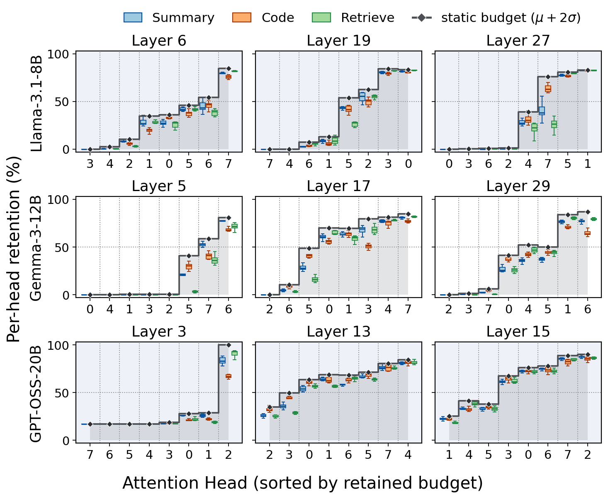
Per-head retention rates (KVzip, 50% target ratio) across Llama-3.1-8B, Gemma-3-12B, and GPT-OSS-20B. Dashed lines mark the static budget Tangram reserves with safety coefficient α=2.
Each head's static budget is calibrated from just 50 pilot samples with a small safety margin (α=2), which absorbs per-input deviation. Because Tangram fixes only the budget and leaves each method's scoring function untouched, it is a drop-in substrate for any non-uniform compression method—adding no cost to the serving path.
The monolithic page forces one KV length on every head. Ragged Paging lifts that constraint—giving similar-budget head groups their own page tables—so a head can finally be compressed at its own length, and the freed memory is actually returned to the pool.

Heads are sorted by their offline budget Bℓ,h and partitioned into groups of Hp heads. Each group's footprint is bounded by its local maximum, tightly tracking the retention its members actually need. Co-locating similar-budget heads—rather than adjacent ones—reclaims an additional 12–25% of the full KV cache.
Fine-grained grouping naively raises CPU scheduling cost to O(Nreq × H/Hp). Tangram aggregates block-table operations with OpenMP across groups and SIMD (AVX-512) within a group, keeping CPU overhead negligible even at small Hp.
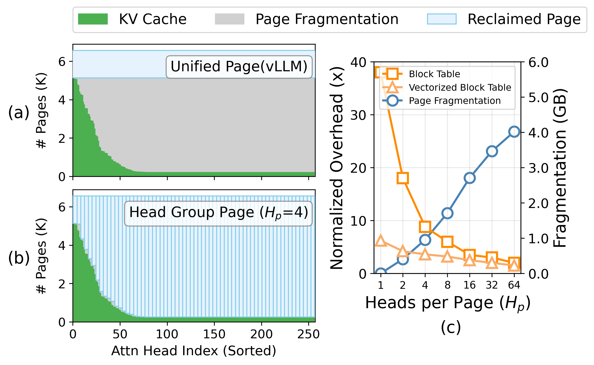
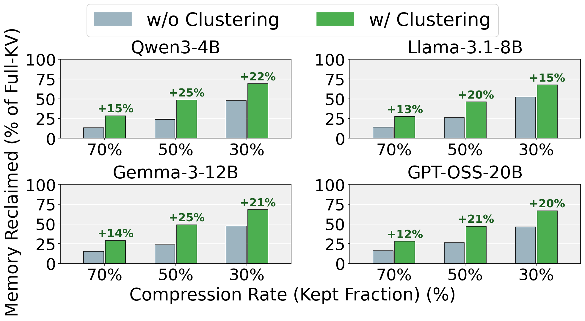
Heterogeneous KV lengths skew per-thread-block workloads, inflating decode attention latency by up to 1.7×. Dynamic rebalancing recovers SM utilization but loses plan reuse across layers, paying 15–20% of decode time per step. Tangram avoids both:
The result: load-balanced GPU utilization without the latency penalty of online planning.
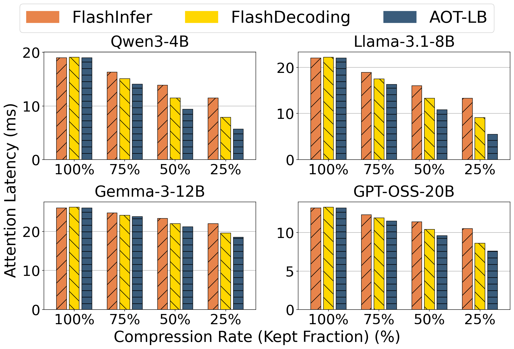
Five dense & Mixture-of-Experts models, all with >100K context: Qwen3-4B, Llama-3.1-8B, Gemma-3-12B, GPT-OSS-20B, Qwen3-30B-A3B.
SCBench — shared-context, multi-turn tasks split into Short (<20K), Mid (20–100K), and Long (>100K). Budgets calibrated offline from 50 pilot samples (α=2).
Drop-in over Ada-SnapKV, Expected Attention, FastKVzip; compared against full-KV vLLM and the FlashDecoding / FlashInfer kernels.
Built on vLLM with custom FlashAttention CUDA kernels, on 4× NVIDIA A100 80GB. All throughput, latency, and fragmentation numbers are measured on real hardware — not simulated.
Throughput gains are only meaningful if accuracy holds. A natural worry is that freezing budgets offline sacrifices the input-adaptivity that makes non-uniform compression accurate—our results show the opposite. For each method (Ada-SnapKV, Expected Attention, FastKVzip), running it under Tangram (w/ Tangram) closely tracks its original implementation (w/o Tangram) across compression ratios—and in some cases exceeds it—while running free of the memory inefficiencies that made it impractical to serve.
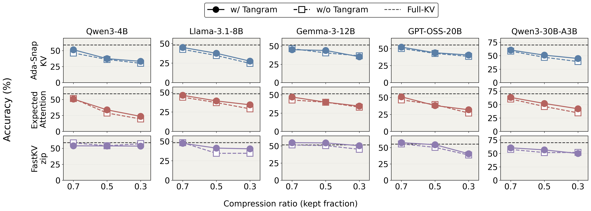
Built on top of vLLM, Tangram is evaluated end-to-end against the vanilla baseline across multi-turn workloads. By reclaiming fragmented memory and removing control-plane overhead, it converts a method's algorithmic compression into real serving throughput—up to 2.6× over the full-KV baseline, with the gain growing as context length increases from Short to Long.
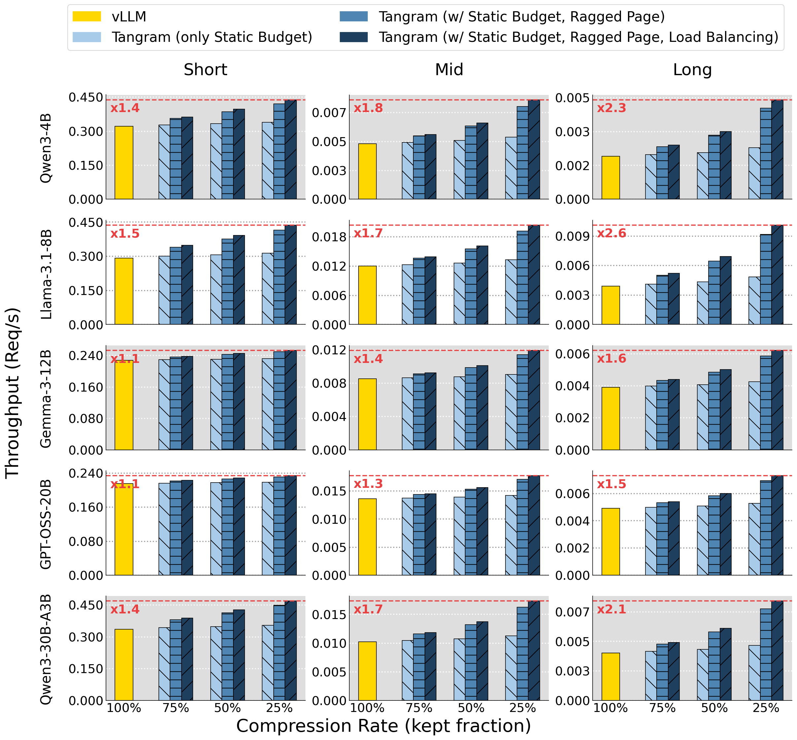
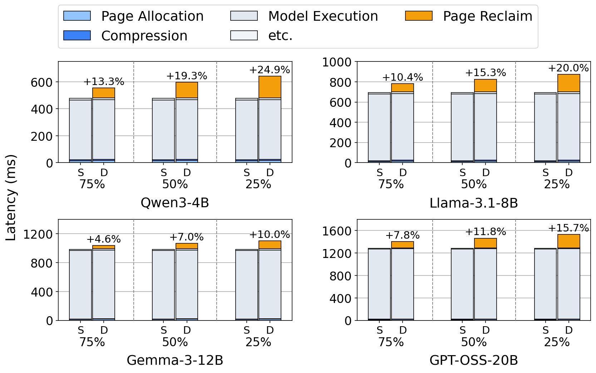
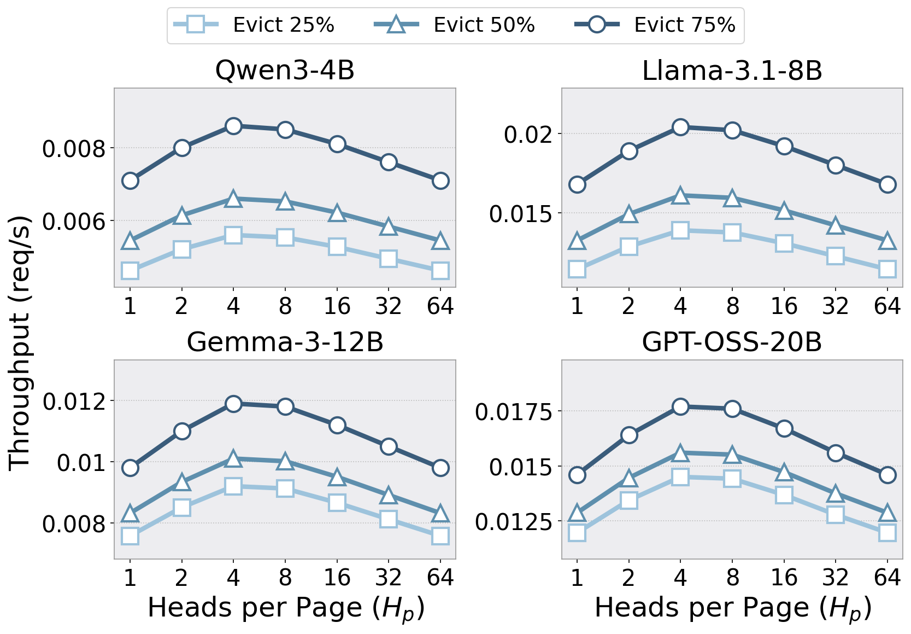
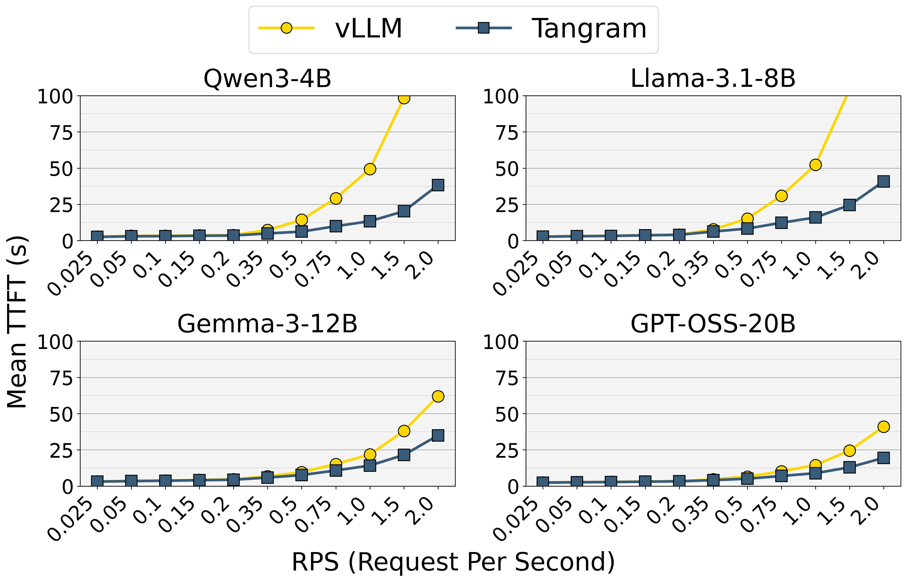
@misc{kim2026tangramunlockingnonuniformkv,
title={Tangram: Unlocking Non-Uniform KV Cache Compression for Efficient Multi-turn LLM Serving},
author={Hyungmin Kim and Minsoo Kim and Hongseok Kim and Jungwook Choi},
year={2026},
eprint={2606.06302},
archivePrefix={arXiv},
primaryClass={cs.LG},
url={https://arxiv.org/abs/2606.06302},
}